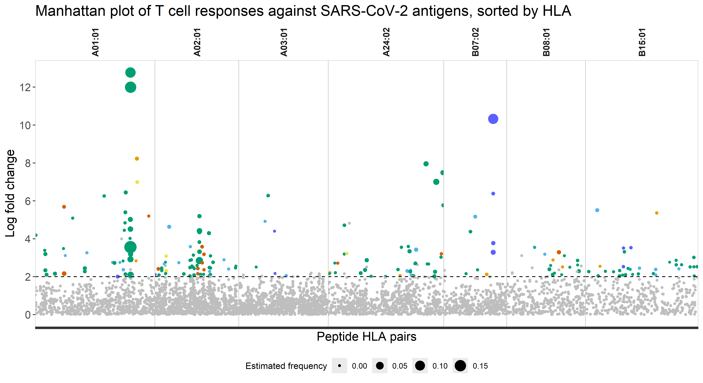
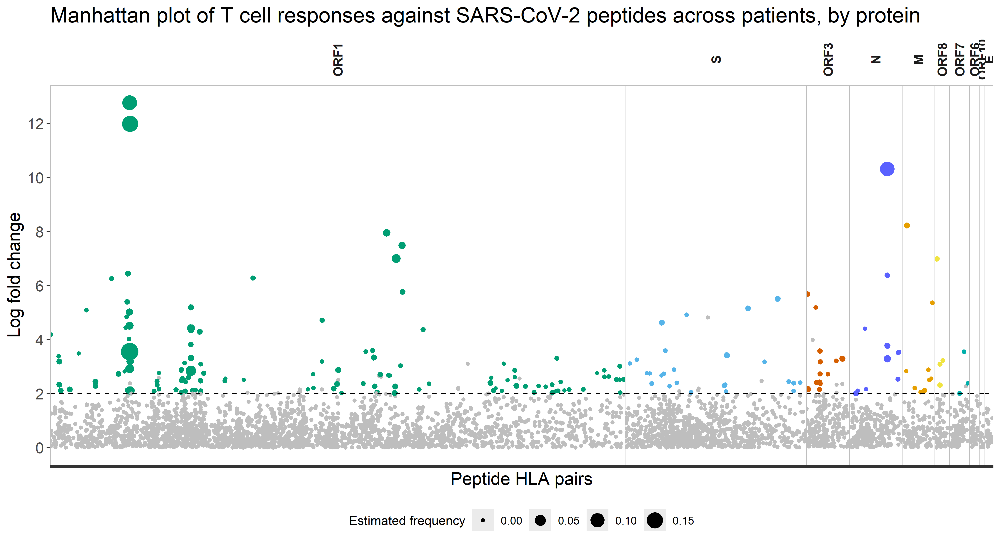
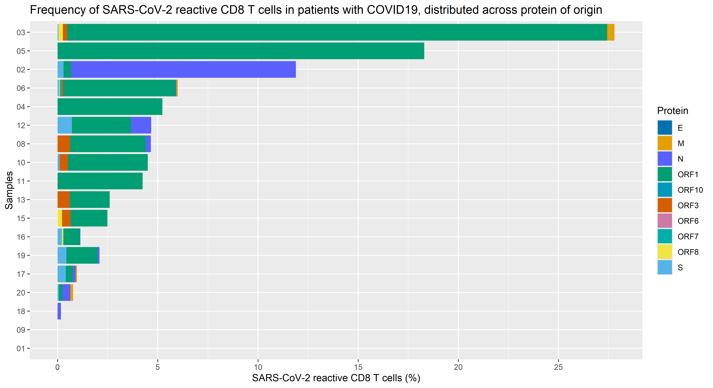

── Conflicts ────────────────────────────────────────── tidyverse_conflicts() ──
✖ dplyr::filter() masks stats::filter()
✖ dplyr::lag() masks stats::lag()
ℹ Use the conflicted package (<http://conflicted.r-lib.org/>) to force all conflicts to become errors
Warning: The `size` argument of `element_rect()` is deprecated as of ggplot2 3.4.0.
ℹ Please use the `linewidth` argument instead.
Warning: Removed 7735 rows containing missing values or values outside the scale range
(`geom_point()`).

In this plot, we can appreciate the distribution of immunogenic peptides across different HLAs, by displaying the estimated frequency of each peptide-HLA pair in the patient cohort.
Summary bar plot: Peptides distribution across HLAs
#how many peptides per HLA for positive T-responsessummary_HLA <- experiment_data|>mutate(HLA =str_remove(HLA, ":"))|>filter(response ==1)|>group_by(HLA)|>summarize(peptidesPerHLA =n_distinct(Peptide))|>ungroup()|>#order HLA descending + fixes appearance for plottingarrange(desc(HLA)) |>mutate(HLA =fct_inorder(HLA))#compute all peptides per HLA independent of positive/negative T-responsestotalPeptidesPerHLA <- experiment_data|>group_by(HLA)|>summarize(totalPeptidesPerHLA =n_distinct(Peptide)) |>arrange(desc(HLA)) |>#also need the same order for combining correct valuesmutate(HLA =fct_inorder(HLA)) |>pull(totalPeptidesPerHLA)pl1 <- summary_HLA |>ggplot(aes(x= peptidesPerHLA, y = HLA) ) +geom_col(aes(width =0.5), fill ="darkblue")+geom_text(aes(label = peptidesPerHLA), hjust =-0.2)+scale_x_continuous(expand =expansion(mult =c(0,.2)))+labs(caption ="Number of HLA-specific\nSARS-CoV-2 epitopes")+theme(aspect.ratio =2/1, axis.title.x =element_blank(), axis.title.y =element_blank(), axis.ticks =element_line(color ="black"),axis.line =element_line(color ="black"), panel.background =element_rect(fill ="white"),plot.caption =element_text(size =12) )pl2 <- summary_HLA |>mutate(percentage_peptides = peptidesPerHLA/totalPeptidesPerHLA *100 )|>ggplot(aes(x= percentage_peptides, y = HLA) ) +geom_col(aes(width =0.5), fill ="darkblue")+geom_text(aes(label =round(percentage_peptides, digits =1)), hjust =-0.2)+scale_x_continuous(expand =expansion(mult =c(0,.2)))+labs(caption ="Immunogenic peptides\n (%, normalized)")+theme(aspect.ratio =2/1, axis.title.x =element_blank(), axis.title.y =element_blank(), axis.text.y =element_blank(),axis.ticks =element_line(color ="black"),axis.line =element_line(color ="black"), panel.background =element_rect(fill ="white"),plot.caption =element_text(size =12) )combined_HLAs <- pl1 | pl2 +plot_layout(widths =c())combined_HLAs
The plot compares, for each HLA, the total number of distinct SARS-CoV-2 peptides that had a positive T-cell response. The right panel shows the percentage of immunogenic peptides normalized to the total peptide number of each HLA.
This highlights the absolute and relative immunogenicity of different HLA types.
Manhattan plot: Immunogenic peptides, sorted by protein of origin
Warning: Removed 7735 rows containing missing values or values outside the scale range
(`geom_point()`).

This plot gives an overview of how immunogenic peptides are spread across various proteins of origin, keeping into account their estimated frequency in the patient cohort.
Summary bar plot: peptides distribution across protein of origin
The plot compares, for each SARS-CoV-2 protein, the total number of HLA-peptide combination that resulted in a positive T-cell response. The right panel shows the percentage of immunogenic peptides relative to all detected peptides of that protein.
This highlights the absolute and relative immunogenicity of different proteins.
Patient-based distributions of peptides across proteins of origin
It is interesting to assess how different genes from SARS-CoV-2 genome contribute in generating immunogenic epitopes, for each patient in the cohort. To do this, we will plot the total frequency of T cell responses for each patient, distributed across the whole genome.
patient_protein <- experiment_data |>mutate(estimated_frequency = estimated_frequency*100, #converts into percentagetotal_estimated_frequency = total_estimated_frequency*100,sampleID =fct_reorder(sampleID, total_estimated_frequency)) |>arrange(desc(total_estimated_frequency))patient_protein|>ggplot(aes(x = estimated_frequency, y = sampleID, fill = Protein)) +geom_col( position ="stack") +scale_fill_manual(values = protein_colors) +scale_x_continuous(breaks=c(0, 5, 10, 15, 20, 25)) +labs( x ="SARS-CoV-2 reactive CD8 T cells (%)", y ="Samples", title ="Frequency of SARS-CoV-2 reactive CD8 T cells in patients with COVID19, distributed across protein of origin")

As shown here, for most samples, the majority of reactive T cells recognize antigens derived from ORF1. Taking into account the size of the genes, hence the amount of peptides that can be generated, it is reasonable to witness a bigger response against bigger genes (such as ORF1).
Identifying immunodominant peptides
At last, we are interested in identifying which peptides are conserved across patients, keeping in mind the restrictions guided by HLA haplotypes. We will define immunodominant, those peptide-HLA for which a T cell population was identified in >= 50 % of the patients carrying given HLA.
Concept of Immunodominance
Immunodominance refers to the phenomenon where the immune system focuses its response on a small fraction of the available viral peptides. Even though SARS-CoV-2 has thousands of potential epitopes, only a select few trigger a strong T-cell response in the majority of patients.
Identifying these “immunodominant” epitopes is crucial for vaccine design, as a good vaccine must include these key targets to ensure broad protection across the population (especially considering different HLA types).
Visualization
The bar plot below shows the Prevalence of the top immunodominant peptides within their respective HLA groups.
# --- Pre-processing for Ivan's plots ---# Ensure we have consistent column names and a binary response variabledf_analysis <- experiment_dataif("sampleID"%in%names(df_analysis)) df_analysis <-rename(df_analysis, patient_id = sampleID)if("Protein"%in%names(df_analysis)) df_analysis <-rename(df_analysis, ORF = Protein)if("Peptide"%in%names(df_analysis)) df_analysis <-rename(df_analysis, peptide = Peptide)if("HLA"%in%names(df_analysis)) df_analysis <-mutate(df_analysis, HLA =str_remove(HLA, "HLA-"))# Create response_binary if missing (p < 0.05)if(!"response_binary"%in%names(df_analysis)) {if("p"%in%names(df_analysis)) { df_analysis <- df_analysis %>%mutate(response_binary =if_else(p <0.05, 1, 0)) }}
# --- Calculation ---# 1. Calculate Prevalence per HLAhla_counts <- experiment_data |>distinct(sampleID, HLA) |>count(HLA, name ="n_patients")valid_hlas <- hla_counts |>filter(n_patients >=3) |>pull(HLA)prevalence_data <- experiment_data |>filter(HLA %in% valid_hlas) |>group_by(HLA, Peptide, Protein) |>summarise(total_tested =n_distinct(sampleID),responders =sum(response),prevalence = responders / total_tested,.groups ="drop" ) |>filter(prevalence >0)# 2. Filter for TOP immunodominant peptidestop_peptides <- prevalence_data |>arrange(desc(prevalence)) |>slice_head(n =20) # Take top 20 strongest responses# 3. Barplotggplot(top_peptides, aes(x = prevalence, y =reorder(Peptide, prevalence), fill = Protein)) +geom_col() +scale_fill_manual(values = protein_colors) +geom_vline(xintercept =0.5, linetype =2) +scale_x_continuous(labels = scales::percent, expand =c(0, 0.05)) +labs(title ="Top Immunodominant SARS-CoV-2 Epitopes",subtitle ="Peptides with highest response frequency within HLA groups (Top 20 shown)",x ="Prevalence (% of responders)",y ="Peptide",fill ="Protein" ) +theme(legend.position ="right",axis.text.y =element_text(size =8) )